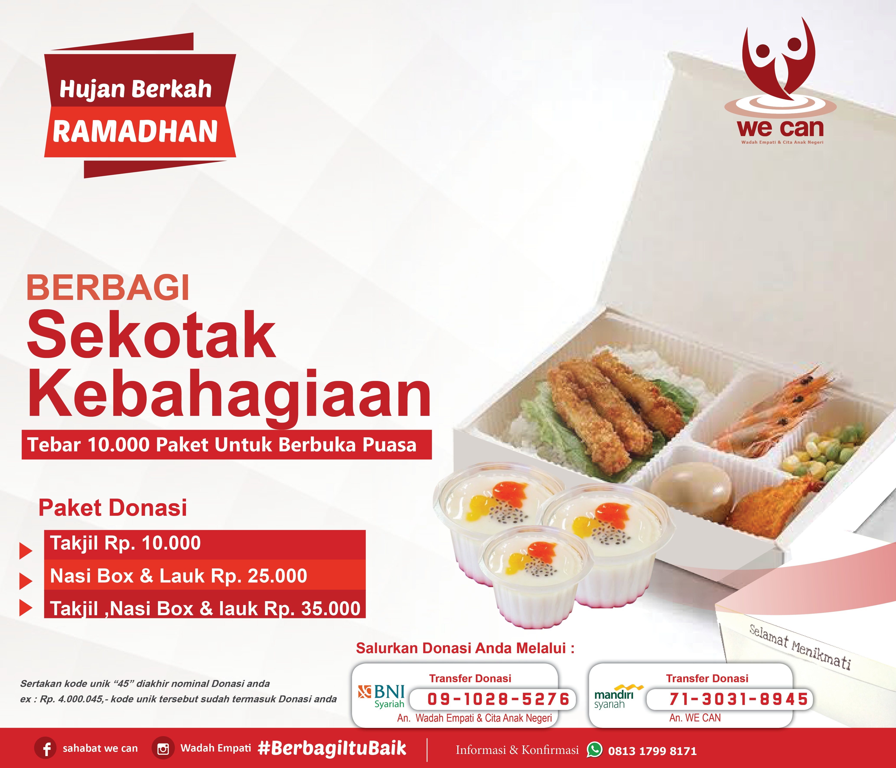
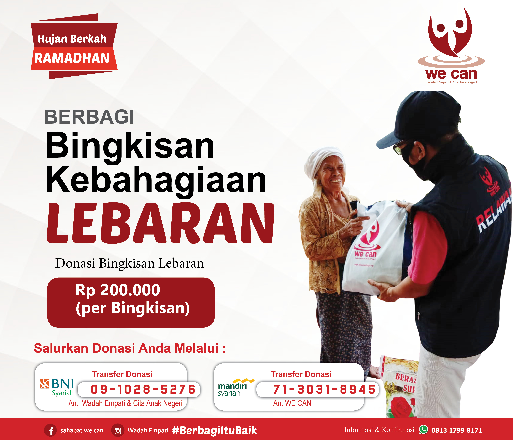
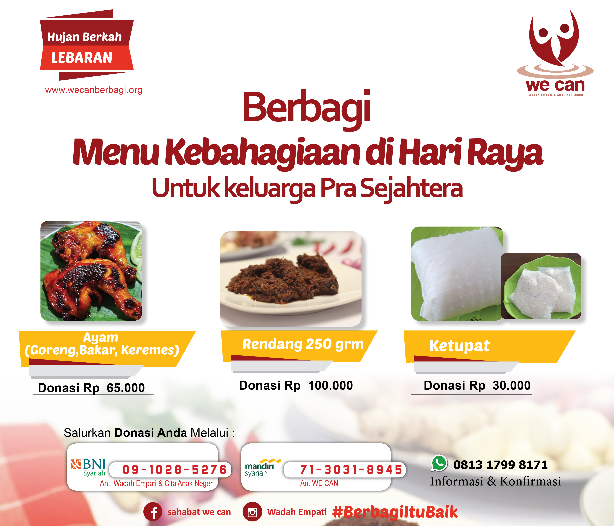

RamadhaNice WE CAN dilatar belakangi orang-orang yang concern terhadap pengelolaan sumber daya umat Islam baik itu Zakat Infaq Wakaf dan lainnya, tak dapat dpungkiri nilai-nilai Islam hadir mewarnai program-program kita, ramadhan tentunya menjadi salah satu perhatian kita.
Paket Takjil & berbuka Puasa
Sahabat, Apa rencana amal kebaikan kita di bulan ramadan kali ini ? Mari kita rencakan amal-amal unggulan kita agar ramadhan tahun ini menjadi ladang pahala untuk kita‚ Sahabat. Jadikan bulan ramadhan mu penuh makna dengan berbagi pada sesama. Kini, sahabat We Can bisa ikut berbagi dengan program "SEKOTAK KEBAHAGIAAN" tersedia pilihan paket :
- 1. Takjil : Rp. 10.000
- 2. Nasi Box & Lauk : Rp. 25.000
- 3. Takjil + Nasi Box & Lauk pauk: Rp. 35.000
Klik Untuk Donasi
sertakan kode unik"45" diakhir donsi nominal anda ex: 4.0000.045,- kode unik tersebut sudah termasuk donasi anda
Bingkisan Lebaran
Sahabat We Can, kehadiran ramadan di tengah pandemi CoVid 19 membuat bulan puasa tahun ini terasa berbeda. Banyak saudara kita terhimpit kesulitan ekonomi. Terkena PHK, tak punya penghasilan sama sekali membuat mereka menjerit karena tak ada makanan lagi di rumah. Anak-anak menangisi perutnya yang lapar, dan orangtuanya kebingungan, sementara mereka teguh menjaga keluarganya tak ke luar rumah. "Bingkisan Kebahagiaan Lebaran" adalah sebuah program memberikan bantuan pangan bagi masyarakat yang hidup kekurangan, terutama saat pandemi COVID 19 melanda. Diriwayatkan dalam Hadist, Rasulullah shallallahu wa'alaihi wa sallam bersabda (yang artinya), Hendaklah kalian saling memberi hadiah, Niscaya kalian akan saling mencintai {HR.Bukhari dalam Al-Adab Al-Mufrod No. 594} Meski #dirumahsaja, #berbagikebaikan bisa dilakukan dimana saja. Yuk #berbagikebaikan! Nilai kecil bagimu, bernilai besar untuk mereka..
Donasi Program Rp.200.000
Klik Untuk Donasi
sertakan kode unik"50" diakhir donsi nominal anda ex: 4.0000.050,- kode unik tersebut sudah termasuk donasi anda
Kebahagiaan di Hari Raya
Sahabat, lebaran tinggal menghitung hari. Kiranya apa yang bisa kita berikan untuk saudara-saudara kita yang kurang beruntung, terlebih lagi dalam kondisi wabah seperti ini. tidak sedikit dari mereka yang kehilangan mata pencarian, mungkin disebabkan karena PHK dan lain sebagainya. Mahalnya bahan pokok seperti daging ayam, daging sapi & kerbau terlebih lagi keadaan yang serba sulit seperti sekarang ini. Kami mengajak sahabat semua untuk ikut berdonasi dalam program "Berbagi Menu Kebahagiian di Hari Raya", di momen bulan ramadhan yang tersisa ini mari kita maksimalkan peluang untuk mendapatkan pahala yang lebih besar lagi dengan cara berbagi kebahagiaan untuk saudara-saudara kita. Program Donasi dihari raya :
Klik Untuk Donasi
- Ayam Goreng,Bakar,Keremes: Rp. 65.000
- Rendang Daging : Rp. 100.000
- Ketupat : Rp. 30.000